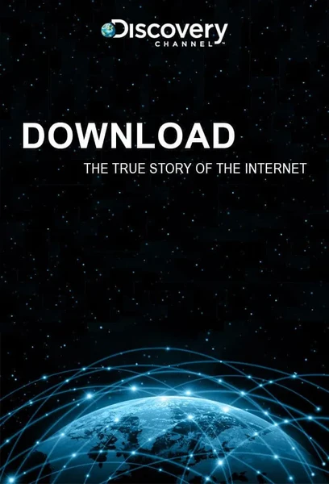

 Документальный · 2008 · История Рассказ о рождении интернета: от досок объявлений и Arpanet до браузерных войн и дотком-лихорадки. Хроника технологий, изменивших мир. How the internet was born: from BBS and ARPANET to browser wars and the dotcom bubble. A chronicle of the technologies that changed the world. Кинопоиск: 7.5 ★ IMDb: 7.7 ★ ← Вернуться в каталог IT Movies